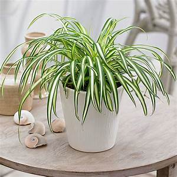
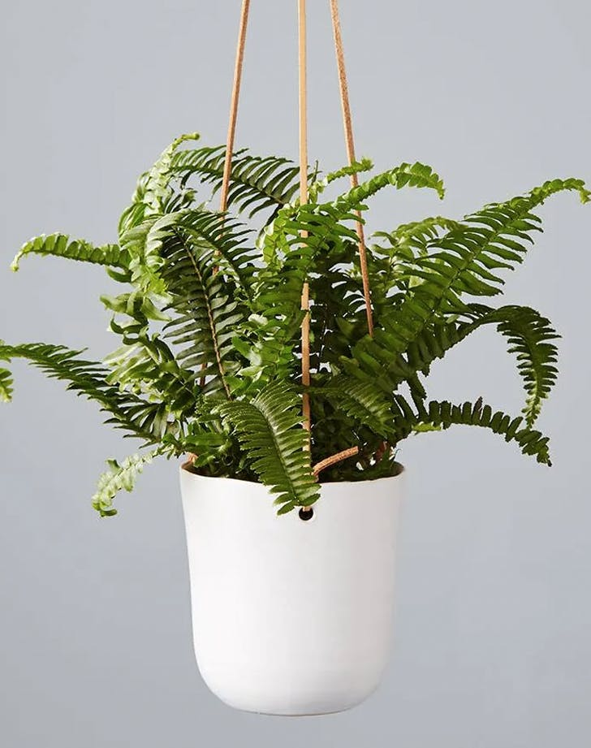
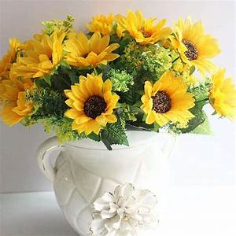
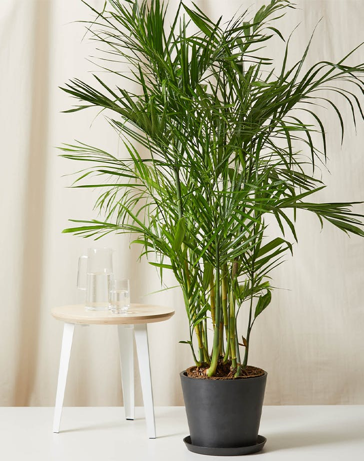

These easy-to-grow houseplants look especially nice in a hanging basket and were a favorite in Victorian-era households. Here’s how to grow spider plants in your home!Keep plants in bright to moderate indirect sunlight. Spider plants do not appreciate direct, hot sunlight, which can burn their leaves, causing brown tips and spots.In the spring and summer months, keep the soil moist to encourage growth. Do not let soil dry out too much.
Fern species that can grow as tall as 7 feet in its native habitat they look great in a hanging basket and very low mainenance. They like to be kept in warm, humid conditions and don't like air from windows or heating.During the winter when the plant isn't growing, you can reduce watering, but your fern should never be allowed to completely dry out.The Boston fern needs bright indirect light when grown indoors and outdoors shaded area.
Sunflowers need a lot of sunlight they flow the sun that is why they always facing up. They easy to grow and grow very quick in summer months. You put seeds in the ground or in a pot from April onwards and mature within 95 days. The largest sunflower varieties grow to over 16 feet in height.
Bamboo is usually a low-maintenance, hardy plant. It rarely has issues with pests or diseases, and it typically doesn’t require pruning. You can remove old canes at their base if they begin to look unsightly. Make sure to plant your bamboo palm in well-drained soils. While these plants like to remain consistently moist, they don't tolerate standing water; 1-3 waterings a week should do the trick. Likes full and partial sun otherwise it won't grow properly within enough sun light.
